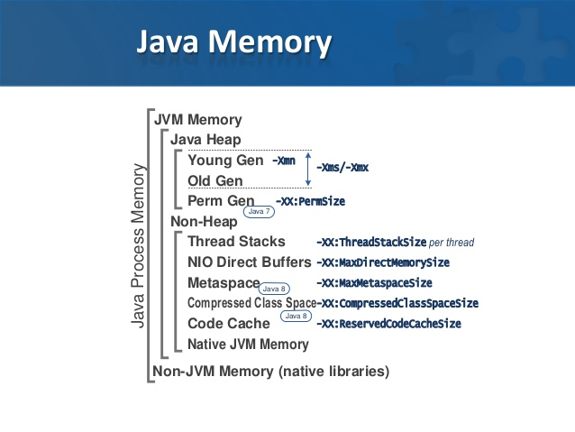
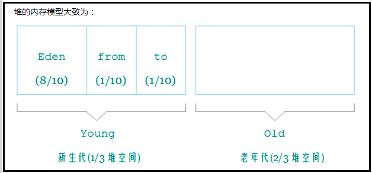

一、内存划分

概括为:
1.方法区存放了
方法的方法名，返回值类型，参数类型，参数顺序
静态变量，静态方法
1.1方法区常量池（1.7开始常量池移入堆内存）
jdk1.7之前字符串常量池在方法区中（1.7以后字符串常量池移入堆）
2.堆内存存放了对象，具体为存放对象的成员变量
3.虚拟机栈内存在方法运行时为每个方法创建栈帧
4.本地方法为虚拟机用到的Nativa方法服务，与操作系统等进行交互
5.程序计数器负责保证方法切换运行时能找到准确的位置
二、类加载器
启动类加载器是虚拟机实现的，其他加载器由虚拟机外部实现。
双亲委托加载机制：所有的加载器都最终继承自启动类加载器，每次加载之前都判断是否已经加载，并且传递给启动类加载器，判断是否被唯一加载。如果没有，再逐层传递到子类加载器，由子类加载器具体加载。
三、类加载
加载 将.class文件加载到内存中
验证 文件格式验证（是否以魔术开头），原数据验证（是否继承不被允许继承的类），符号引用验证等
准备 给类变量分配内存，赋初值
解析 虚拟机常量池内的符号引用替换为直接引用的过程。
例如在Worker类的gotoWork()方法中会引用Car类的run()方法。
public void gotoWork() {
car.run();// 这段代码在Worker类的二进制数据中表示为符号引用
}
解析阶段，Java虚拟机会把这个符号引用替换为一个指针，该指针指向Car类的run()方法在方法区内的内存位置，这个指针就是直接引用。
初始化，根据static书写顺序来进行最终赋值或者执行静态代码块
说明：类名.class 不会执行static代码块因此可以判断未完成类加载过程。而Class.forName()完成了类加载的全过程
四、类实例化
1.父类成员变量分配内存空间，赋值
2.父类构造代码块，构造函数执行
3.子类成员变量分配内存空间，赋值
4.子类构造代码块，构造函数执行
以上场景，当子类继承父类，在子类构造函数第一行显示调用父类构造函数时，根据顺序，先执行父类成员变量分配内存赋值，然后执行父类构造函数，然后此时执行子类成员变量分配内存赋值，然后接着执行完子类构造函数
/**
* 实验代码
*/
class C {
C() {
System.out.print("C");
}
}
class CR{
CR(){
System.out.println("CR");
}
}
class A {
C c = new C();
A() {
this("A");
System.out.print("A");
}
A(String s) {
System.out.print(s);
}
}
public class Example extends A {
CR cr = new CR();
Example() {
super("B");
System.out.print("B");
}
public static void main(String[] args) {
new Example();
}
}
执行结果：
CBCR
B
目前所知，在类加载第5部没有完成的时候，也可以实例化，具体体现为饿汉单例模式
public class Demo{
private static Demo demo = new Demo();
}
一个大牛对饿汉单例模式的执行过程总结的很有借鉴价值
大致总结下，这个例子中会
1. 读取A的class 文件，认证和解析
2. 初始化成员A a，给一个指针的空间，附属一个null的默认值
3. 准备好alloctMemAndRunConsturctorOfA，并定义其返回值给A（但这时alloctMemAndRunConsturctorOfA并不会执行）
4. 类A初始化完毕，得知sizeOf(A)
5. 运行alloctMemAndRunConsturctorOfA
5.1 分配sizeOf（A）那么大的内存
5.2 运行A的构造函数
5.3 把地址赋值给a
完事
五，字节码执行顺序
注意，在虚拟机中中的数据类型有原始类型和引用类型，原始类型分数值类型，布尔类型，returnAddress类型。值得思考的是，byte,short,boolean,char类型的load，store系列等指令都是由int类型对应指令替代的。这或许可以解释，为什么java里数字可以直接赋值给上面四种数值类型。
方法运行时栈内结构：
六、垃圾回收

堆内存是gc管理的主要区域，具体分为新生代和老年代，其中新生代又可分为eden和surivor区，根据对象存活时间和对象大小等进去不同区域，新建对象大多首先进入eden区。
java回收算法：
复制算法：两个区域A和B，初始对象在A，继续存活的对象被转移到B。此为新生代最常用的算法
标记清理：一块区域，标记可达对象（可达性分析），然后回收不可达对象，会出现碎片，那么引出
标记-整理算法：多了碎片整理，整理出更大的内存放更大的对象
两个概念：新生代和年老代
新生代：初始对象，生命周期短的
永久代：长时间存在的对象
整个java的垃圾回收是新生代和年老代的协作，这种叫做分代回收。
P.S：Serial New收集器是针对新生代的收集器，采用的是复制算法
Parallel New（并行）收集器，新生代采用复制算法，老年代采用标记整理
Parallel Scavenge（并行）收集器，针对新生代，采用复制收集算法
Serial Old（串行）收集器，新生代采用复制，老年代采用标记整理
Parallel Old（并行）收集器，针对老年代，标记整理
CMS收集器，基于标记清理
G1收集器：整体上是基于标记 整理 ，局部采用复制
综上：新生代基本采用复制算法，老年代采用标记整理算法。cms采用标记清理。
七、JVM调参
-Xss 每个线程的栈大小
-Xms 初始堆大小
-Xmx 最大堆大小
-Xmn2g：设置年轻代大小为2G（-XX:NewSize和-XX:MaxNewSize大小相同均为2g）。在整个堆内存大小确定的情况下，增大年轻代将会减小年老代，反之亦然。此值关系到JVM垃圾回收，对系统性能影响较大，官方推荐配置为整个堆大小的3/8。
-XX:NewSize=1024m：设置年轻代初始值为1024M。
-XX:MaxNewSize=1024m：设置年轻代最大值为1024M。
（jdk1.7） -XX:PermSize=64m：—设置永久代(Permanent Space)初始值为64M。
（jdk1.7） -XX:MaxPermSize=256m：设置持久代最大值为256M。
（jdk1.8） -XX:MaxMetaspaceSize = 256m: 设置元空间最大值为256M。
（jdk1.8） -XX:MetaspaceSize = 64m : 设置元空间初始值为64M
-XX:ReservedCodeCacheSize=128m 设置代码缓存区的大小（JIT编译后的都放在这里）
-XX:NewRatio=4：设置年轻代（包括1个Eden和2个Survivor区）与年老代的比值。表示年轻代比年老代为1:4。
-XX:SurvivorRatio=8：设置年轻代中Eden区与Survivor区的比值。表示2个Survivor区（JVM堆内存年轻代中默认有2个大小相等的Survivor区）与1个Eden区的比值为2:8，即1个Survivor区占整个年轻代大小的1/10。
-XX:MaxTenuringThreshold=15 表示晋升到老年代的gc年龄，达到这个值就自动进入老年代，如果设置为0的话，表示不经过survivor区，直接进入到老年代
-XX:PretenureSizeThreshold = 0 表示晋升到老年代的对象大小，遇到超过这个值的对象，直接晋升到老年代（ PretenureSizeThreshold 参数只对Serial和ParNew两款收集器有效, Parallel Scavenge 不识别这个参数），默认值为0 时表示此条件不生效。
两个疑问
1.class Demo{
private static Demo demo = new Demo();
}
类对象创建可以不等初始化完就可以进行
2.类名.class 这种用法有点像调用静态变量/方法 那么.class到底是什么用法，会触发类加载到第几步，可以肯定不会到初始化赋值那步。因为经过测试这样不会执行静态代码块。